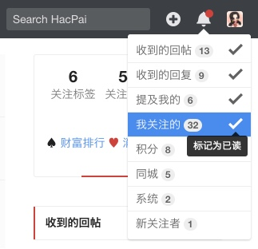
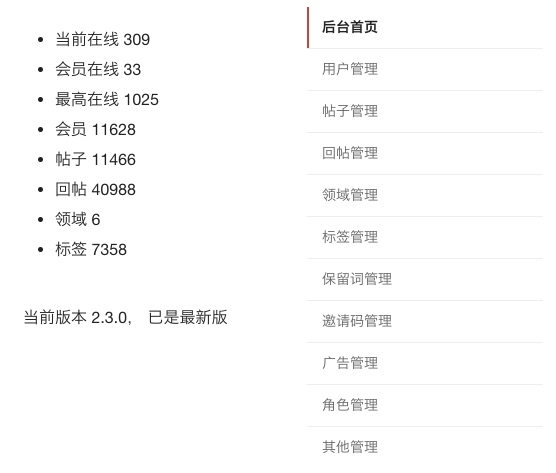

Symphony
[ˈsɪmfəni]，n.交响乐
下一代的社区系统，为未来而构建
- 实现了面向内容讨论的论坛
- 包含了面向用户分享、交友、游戏的社交网络
- 集成了聚合独立博客（如：Pipe，Solo）的能力，共建共享优质资源
-
并且 100% 开源
GitHub
功能点脑图

人性化实时交互
- 回帖提交后其他浏览者可以不刷新页面就实时看到你的回帖
- 回复/引用可以在当前位置进行展开浏览，也可以跳转到回帖处，并支持跨分页跳转
- 回帖时可以让机器人也参与到讨论中来，活跃气氛的同时说不定机器人真的能解决一些问题呢
- 即时的消息通知：收到的回帖、收到的回复、提及我的、我关注的、积分、同城、系统
- 友好的 Chrome 桌面提醒
搜索引擎友好
- 标签、领域可以自定义链接，并且可以单独配置 meta title/keywords/description
- 后端 Markdown 渲染，输出爬虫可读的 HTML
- 管理员设置的浏览权限不影响爬虫抓取内容
- 通过一些 HTML 细节属性（比如 canonical）进行 SEO
- 通过配置即可集成
Algolia
云搜索服务，可自定义搜索字段，并进行权重、排序调优
- 也可以自己搭建 Elasticsearch 并通过配置进行集成

强大的后台
- 搜索用户；添加用户；修改用户；用户积分充值、兑换、扣除
- 搜索帖子；添加新帖；修改帖子；帖子置顶、重建索引、删除
- 回帖状态管理；回帖数据维护；删除回帖
- 搜索领域；添加领域；领域数据维护；删除领域
- 搜索标签；添加标签；标签数据维护；标签清理
- 添加保留词；保留词数据维护；删除保留词
- 生成邀请码；邀请码数据维护
- 侧边栏及顶部展位内容维护
- 添加角色；为角色分配权限
- 邀请码注册；多语言设置
查看更多特性